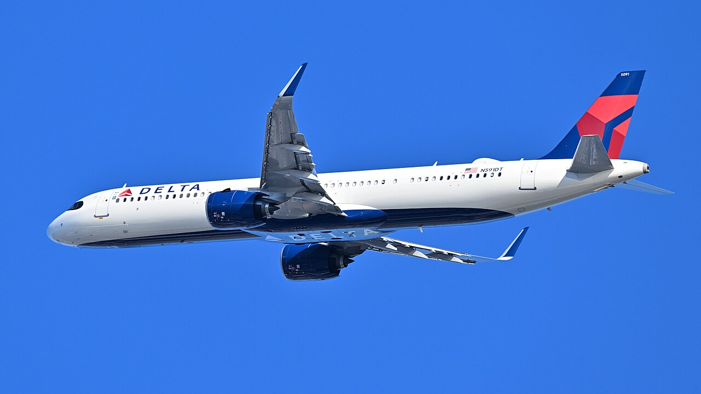

Delta's revenue rose 21% to $20.2 billion as net income fell 47% on fuel and investments


Delta Air Lines' revenue grew 21.1% to $20.2 billion in the third quarter of 2026, its fastest growth in the twelve quarters covered here. Costs grew faster: the company said fuel and related taxes rose $1.8 billion, mainly because it paid 63% more for jet fuel. Operating margin fell to 7.2% from 10.1%, and with losses on investments, net income fell 46.6% to $756 million.
Revenue grew on higher fares and refinery sales
Revenue rose by $3.5 billion from the third quarter of 2025. Passenger revenue accounted for $2.0 billion of the increase, which the company put down to "broad based demand strength across premium, main, and loyalty." Sales of fuel from Delta's oil refinery to other companies added $1.1 billion. Those refinery sales come with matching costs, so Delta also reports revenue without them: on that basis, revenue grew 16%.
Growth has picked up through 2026. Revenue grew 12.9% in the first quarter and 18.7% in the second, after 6.4% in the third quarter of 2025. For the first nine months of 2026, revenue was up 17.8% at $55.8 billion.
Fuel pushed costs up faster than revenue
Operating expenses rose 25.0% to $18.7 billion. The 10-Q says the increase came mainly from higher fuel costs, the costs of the extra refinery sales and higher salaries. Operating income fell 13.7% to $1,454 million. The refinery itself made an operating loss of $33 million, against a profit of $53 million a year earlier, which the company linked to swings in crude prices and an outage that began in June.
Operating margin was 7.2%, down from 10.1% a year earlier and 8.9% two years earlier. For the nine months it was 6.8%, against 9.2% in the same period of 2025.
Below operating income, Delta had non-operating expense of $380 million, against income of $93 million a year earlier. The company said this was mainly because its equity investments lost value in the quarter after gaining in the same quarter of 2025. Pre-tax income fell 39.6% to $1,074 million. The tax charge took 29.6% of pre-tax income, up from 20.3%, so net income fell further, by 46.6%. Diluted earnings per share fell 47.0% to $1.15.
Cash flow dipped and debt kept falling
Cash from operations was $1.7 billion, down 7.3%. For the nine months it was $5.7 billion, against $6.1 billion a year earlier, while capital expenditures rose to $4.1 billion from $3.6 billion. Delta's own measure of free cash flow, which it adjusts for some items, was $463 million for the quarter.
Delta repaid $3.3 billion of debt and finance leases in the first nine months. Total debt fell to $12.1 billion at September 30, from $13.3 billion at the end of 2025 and $18.6 billion at the end of 2023. Cash and cash equivalents were $3.8 billion. Dividends paid in the quarter rose to $141 million from $122 million, and Delta bought back no shares.
For the full year, the company said: "we expect to generate a pre-tax profit of roughly $4.5 billion, absorbing a $6 billion increase in fuel costs."
Twelve quarters of figures
Capital spending and free cash flow (cash from operations minus capital spending) are left out of this report's quarterly charts and table. The structured data for the June and September 2026 quarters doesn't match the 10-Q, which reports capital expenditures of $4.1 billion for the first nine months of 2026, so those two lines in the CSV file should not be used for 2026. Total debt doesn't include finance leases. Delta doesn't report gross profit, and diluted share counts aren't shown for fourth quarters.
Sources: Form 10-Q (SEC EDGAR) · Form 10-Q filing index · EDGAR company facts for Delta Air Lines · Delta September quarter 2026 earnings release (Exhibit 99.1). More figures for Delta Air Lines are on its company page.